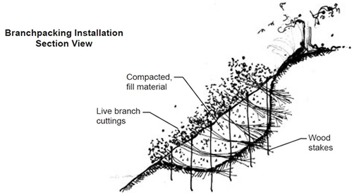

Branch Packing
What is it?
Branch packing is a similar technique to brush layering , but is used to repair holes in the bank - not to rebuild an entire stream bank. Dormant/live cuttings and soil are layered to fill in the hole. Cuttings will subsequently root providing additional bank stabilization and will also trap sediment and seed from stormwater runoff.
 (diagram from NRCS)
Conservation Benefits
- Minimizes bank erosion
- Promotes establishment of vegetation
- Provides fish and wildlife habitat
- Restablishes functioning riparian area
What does it include?
Branch packing should only be used for small sections of streambanks and designed under the guidence of technical experts and materials should be regionally, watershed, and hydrolically appropriate. Dormant cuttings and fill should be selected to promote revegetation and be able to withstand erosive water velocities. Water seepage through the bank should also be considered when selecting materials. NRCS recommondes not using this technique for areas greater than 4 feet deep or 4 feet wide or on slopes greater than 2:1.